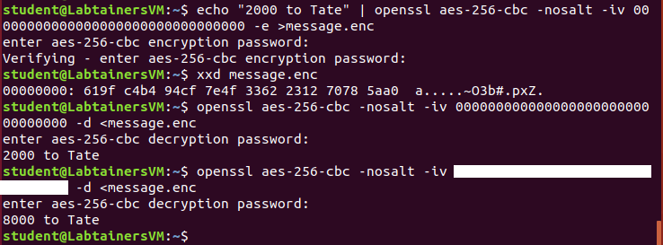

Solve “Question 4” from the Formal Models for Cryptography reading. Your presentation is as important as coming up with the solution here. Your solution should be similar to what is in Example 3 of the reading: clearly define the adversary algorithms, with pseudocode, and analyze probabilities.
We discussed CBC mode in class with a diagram on the slides, and formulas are given on pages 403–404 in the textbook. For this problem you are to show how CBC mode is malleable — remember from class that “malleable” means that an attacker can tamper with the ciphertext so that when the receiver decrypts the ciphertext there is some predictable change in the plaintext they recover.
When CBC mode is used in practice, the IV is typically sent in the clear immediately preceding the ciphertext, and in an active attack the adversary can tamper with either the IV or the ciphertext. The “openssl” program can be used to do encryptions and decryptions with a given IV, and the following screenshot illustrates such an attack. Notice that a message (“2000 to Tate”) is first encrypted using AES with a 256-bit key in CBC mode, but an IV of all zeros (unfortunately a common mistake of programmers who forget to pick a random IV!). Then there’s a straight decrypt of that message with the correct IV, showing the original message being recovered. But then the final command shows a second decryption (with a hidden IV) that now says “8000 to Tate”. That’s a malleability attack!

Explain how this attack works – use the CBC formulas to show how an attacker that knows the first character of the plaintext can modify the IV so that the receiver’s decryption will start with any character of the attacker’s choice. Don’t assume an IV of all zeroes, like in my example – you should describe a general attack, that would work with any plaintext and any IV. Justify that this works using properties of exclusive-or (XOR). For instance, we know that XOR is associative (so \((x\oplus y)\oplus z=x\oplus (y\oplus z)\)), commutative (so \(x\oplus y=y\oplus x\)), zero is the identity element (so \(x\oplus 0=x\)), and every element is its own inverse (so \(x\oplus x=0\)).
Given this attack, what was the hidden IV used in the example/screenshot above?
Consider two users on a Unix system, alice and bob. Both are members of the group develop. There is another user on the system, charlie, who is not a member of the develop group. Consider the following files in a directory that all users can access:
-r--r----- 1 alice develop 3612 Oct 25 14:36 Makefile
-rwxrwxr-x 1 alice develop 4823 Oct 27 11:04 execute
-rw-rw-r-- 1 alice alice 2145 Oct 27 11:31 notes.txt
-rw-rw-r-- 1 bob develop 1098 Oct 26 21:56 source.c
-rw------- 1 alice develop 2796 Oct 27 11:03 source.o
-rwsrwxr-x 1 alice develop 4823 Oct 27 11:12 specialFor each question below, give a very brief explanation of your answer.
Which files can alice modify?
Which files can bob modify?
Which files can charlie read?
Which files can charlie modify?
Programs named execute and special are the exact same program, but are two copies with different permissions. This program tries to open and modify the notes.txt file. If bob runs the version named execute, will the program be able to perform these operations?
If bob runs the version named special, will the program be able to perform these operations?
If execute and special perform differently for bob, why?
The “capabilities” labtainer exercise is brief and can be completed in under 30 minutes, but it demonstrates a very important security feature of modern Linux systems. Complete the labtainer exercise, with the following change: you do not need to submit the lab report it refers to under “Submission,” nor do you have to answer the questions at the end of Task 2, but you still need to submit the .lab file which documents your work. Hint for Task 1.2: You may need to refer to the man page “cap_from_text” to see how to format the capability-setting command. Remember that any time you are working on a lab, you can always type checkwork in the main system window to see how many of the major requirements have been met (there are other things that are checked in grading, but this gives good high-level feedback).
You should also answer this question as part of your written problem submission: What results did you see from Task 2? In other words, which open calls failed? Answer honestly: Did you correctly predict what was going to happen? Then explain in your own words why some calls failed and others succeeded.
Complete the “pass-crack” labtainer exercise, including the lab report and spreadsheet (which are submitted as part of the labtainer lab file – there’s nothing to submit as part of the written problems).